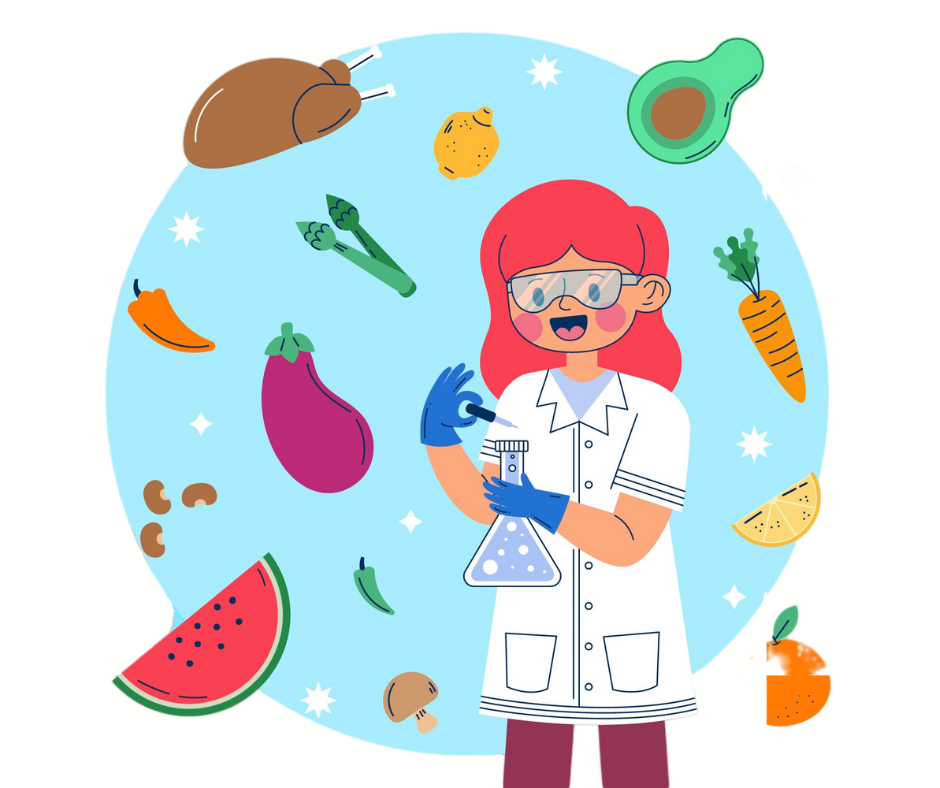

Sobre Mí
Tu nutricionista, Alicia, es una experta altamente calificada y graduada de la Universidad Autónoma Metropolitana Xochimilco, con más de 19 años de experiencia en consulta privada y control de peso. Su sólida trayectoria incluye experiencia y ayuda con Mesoterapia, especialista en ayuno intermitente y dieta Keto o cetogénica, terapia de electrodos Tens y ems, así como nutrición ortomolecular.
Alicia ofrece una atención excepcional a pacientes con diversas condiciones, incluyendo diabetes, hiperlipidemias, cáncer, así como a niños y deportistas. Alicia se distingue no solo por su conocimiento técnico, sino también por su habilidad para comunicarse de manera efectiva con pacientes de todas las edades. Su capacidad para adaptar su enfoque y lenguaje según las necesidades individuales permite que cada paciente comprenda claramente su plan nutricional y se sienta motivado para seguirlo. Esta habilidad de comunicación es especialmente valiosa en su trabajo con grupos y empresas privadas y gubernamentales, donde Alicia imparte charlas sobre hábitos alimenticios y promueve el bienestar de manera inclusiva.
Los programas de alimentación diseñados por Alicia son altamente personalizados, teniendo en cuenta factores como la edad, el sexo, el nivel de actividad física y el estado de salud de cada paciente. Su enfoque integral busca no solo lograr una estabilidad nutricional óptima, sino también fomentar un cambio de hábitos positivos y sostenibles. Alicia se esfuerza por garantizar que cada paciente se sienta activo y saludable, sin la sensación de estar restringido por un régimen alimenticio. Su compromiso con la inclusión y la atención personalizada asegura que todos sus pacientes, sin importar sus circunstancias, recibirán un plan adaptado a sus necesidades específicas y se beneficiarán de un acompañamiento cercano y empático.
Que incluye agendar en EARN NUTRITION:
* Nutrióloga Profesional: Te atenderá la nutrióloga certificada y con amplia experiencia profesional.
* Historia Clínica Completa: En tu consulta se elaborará una historia clínica completa que permitirá un diagnóstico más acertado.
* Análisis de Composición Corporal: En cada consulta obtendrás un informe de análisis de composición corporal por parte de la nutrióloga en el que conocerás tu peso, porcentaje de grasa y músculo.
* Plan de Alimentación Personalizado: En base a lo anterior recibirás un plan de alimentación completamente personalizado a tus requerimientos, acompañado a tu persona para evitar que sufras en el proceso y lo disfrutes a tu manera.
* Consejos Profesionales: Amplios consejos para acompañar a que tu proceso sea más eficiente y eficaz día a día.
Principales causas para una Consulta En Nutrición

Control de peso

Nutrición saludable

Nutrición por enfermedad

Cambio de estilo de vida

Problemas personales

Mejora de salud consigo mismo
Servicios
- Control de peso
- Mesoterapia en ayuno intermitente, dieta Keto o cetogénica, terapia de electrodos Tens y ems.
- Nutrición ortomolecular
- Diabetes
- Cáncer
- Hiperlipidemias
- Consulta a personas de todas las edades y condiciones a tratar
- Planes personalizados
- ¡Y más!

Agenda y Contacto
Agenda tu consulta por medio presencial o videollamada. Presencial incluye en el consultorio privado de la Nutrióloga o incluso a domicilio, dependiendo de factores como distancia y tiempo, y todo bajo cotización. O agenda tu consulta por medio online, es decir, videollamada personal con la nutrióloga atendiendo diversos factores como tiempo y disponibilidad con la finalidad de que el proceso sea igual de efectivo.
Esto de favor al número +52 5549222628
Correo electrónico: tunutriologa.earnnutrition@yahoo.com.mx
Síguenos en Facebook: Earn Nutrition Nutrióloga
Ubicación
Av. Javier Rojo Gómez 19 bis, San Miguel, Iztapalapa, 09360 Ciudad de México, CDMX

Se agradecen los comentarios positivos en Google Maps, comparte tu experiencia: Google Maps
Calificación y Opiniones
Juan Pérez: Excelente atención y seguimiento. La nutrióloga es muy profesional y atenta. Me ayudó a mejorar mis hábitos alimenticios.
María Gómez: Muy contenta con el plan personalizado. Los resultados han sido maravillosos y la atención es inmejorable.
Pedro Martínez: La consulta fue muy completa. Aprecio el enfoque personalizado y los consejos prácticos para mi día a día.